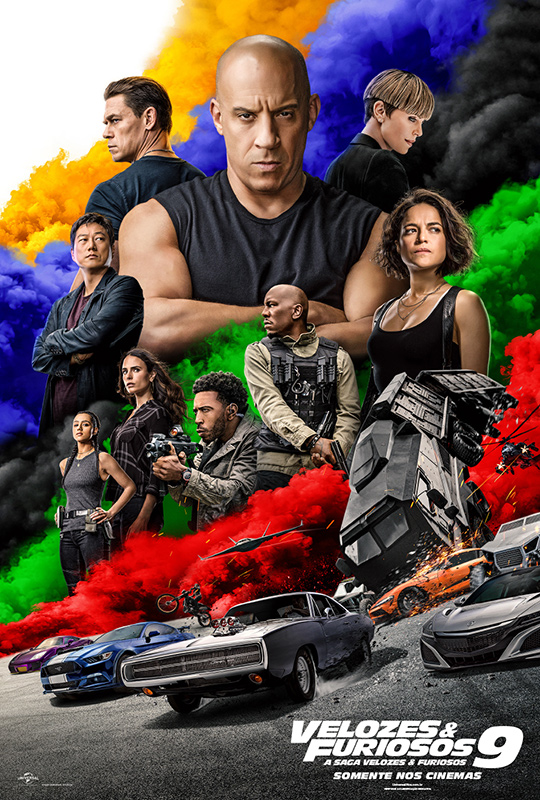

VELOZES E FURIOSOS 9
- lançamento: JUNHO 2021
- duração: 2h 23min
- direção: Justin Lin
- elenco:Vin Diesel, Michelle Rodriguez, Jordana Brewster
- gêneros: Ação
SINOPSE
Em Velozes & Furiosos 9, Dominic Toretto (Vin Diesel) e Letty (Michelle Rodriguez) vivem uma vida pacata ao lado de seu filho Brian. Mas eles logo são ameaçados quando o irmão desaparecido de Dom retorna. Jakob (John Cena), um assassino habilidoso e excelente motorista, está trabalhando ao lado de Cipher (Charlize Theron), vilã de Velozes & Furiosos 8. Para enfrentá-los, Toretto vai precisar reunir sua equipe novamente, inclusive Han (Sung Kang), que todos acreditavam estar morto.